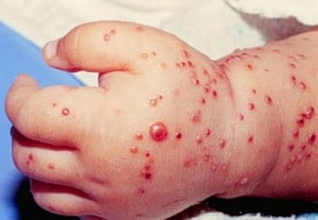
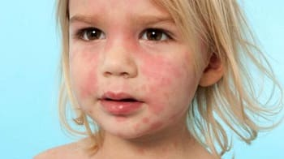
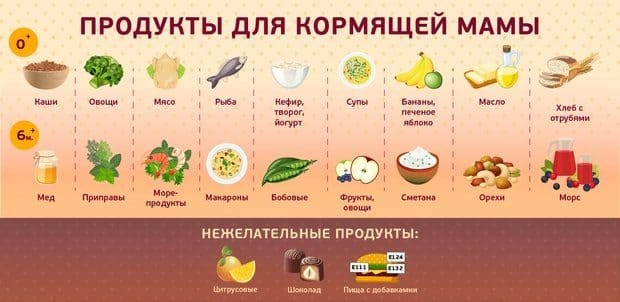
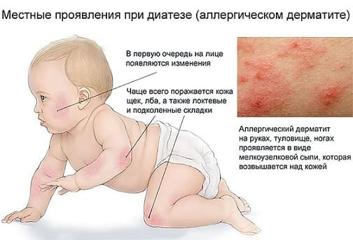
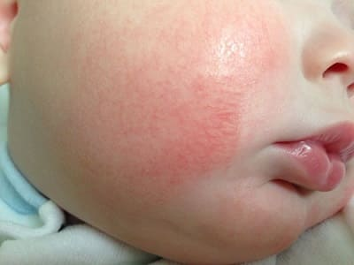
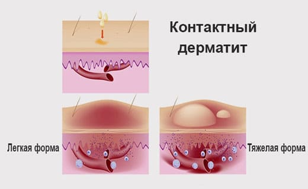

Активное ознакомление широких народных масс с достижениями современной медицинской науки привело к тому, что многие узкоспециальные медицинские термины стали постоянно использоваться в нашей обыденной речи. Словечки типа «инфаркт», «инсульт», «шок», «резекция» у всех на слуху, но факт этот вовсе не свидетельствует о понимании смысла указанных слов. Достойное место в ряду вышеотмеченных терминов занимает такое понятие, как «диатез». Слово это известно каждому, кто ребенка имеет, каждому, кто посетил детскую поликлинику, и каждому, кто переступил порог дома, где находится маленький ребенок. Будущими диатезами беременных женщин пугают, имеющиеся диатезы у детей лечат, но при этом 100 % мамочек понятия не имеют, что такое диатез.
Представим себе такую ситуацию: рядовой наш соотечественник захотел ознакомиться с достижениями передовой медицинской науки и полистать учебник по педиатрии. Побежал он в книжный магазин и в соответствующем отделе обнаружил две очень толстые и очень красивые книги: «Педиатрия» – учебник национальной медицинской серии США и опять-таки «Педиатрия» – руководство, написанное коллективом детской клиники Бостона (все те же США). Но, заглянув в предметный указатель, с удивлением обнаружит любопытный наш товарищ, что ни в одной из указанных книг НЕТ ВООБЩЕ ТАКОГО СЛОВА «ДИАТЕЗ»!
Как же так?! Что же это за хворь такая, известная у нас каждому, но неведомая нашим особо передовым заморским друзьям?
Констатировав такое странное положение вещей и заинтриговав удивленных читателей, попытаемся теперь разобраться с этим самым диатезом.
Итак, заметим для начала, что целый ряд болезней, с удивительной частотой встречающихся в детском возрасте (особенно в раннем детском возрасте), практически отсутствует у взрослых. Ну скажите, много ли вы видели дядь и теть с красными щеками после употребления клубники? Короче говоря, растущий организм имеет целый ряд особенностей и в процессе переваривания пищи, и в частоте инфекционных болезней, и в реакциях на различные факторы цивилизации – особенно когда речь идет о бытовой химии и лекарственных препаратах.
Упомянутых особенностей множество, но главное в другом. Конкретный уровень здоровья (частота и тяжесть болезней, развитие психики, вес, рост, поведение, аппетит и т. п.) определяется по большому счету всего лишь двумя факторами:
• наследственностью, т. е. той генетической базой, что досталась ребенку от его мамы и папы, и
• влиянием факторов внешней среды, начиная от образа жизни мамы во время беременности и заканчивая условиями, в которых живет маленький ребенок (экология конкретной местности и жилищные условия, еда и питье, прогулки и водные процедуры, сон и игры, уровень медицинской помощи и т. д.).
Совокупность присущих человеческому организму свойств – упрощенно говоря, это внешний вид + нормальное (или ненормальное) функционирование внутренних органов + уровень психики + частота и виды болезней – обозначается в медицине таким термином, как конституция организма.
Каждому из нас вообще и каждому нашему ребенку в частности присущ некий вариант конституции, коих описано немало (астеническая, нормостеническая, невропатическая, шизоидная, гиперстеническая и т. д.). Ориентировочно представив себе, что такое конституция, мы имеем теперь возможность добраться и до диатеза, процитировав его определение по энциклопедическому словарю медицинских терминов:
ДИАТЕЗ (diathesis; греч. – склонность к чему-либо, предрасположение) – аномалия конституции, характеризующаяся предрасположенностью к некоторым болезням или неадекватным реакциям на обычные раздражители.
Приведенное определение показывает, что
ДИАТЕЗ не является ни болезнью, ни диагнозом, а употребляя это слово, мы лишь констатируем склонность ребенка к некоторым болезням. Нельзя лечить диатез, нельзя его вылечить, – склонности и предрасположения не лечатся! Но можно установить конкретный диагноз и вылечить конкретное заболевание.
Учение о диатезах – достижение нашей, отечественной, медицинской науки. Заморские врачеватели не посчитали его (учение) существенным, и отсутствие слова «диатез» в американских учебниках в этой связи вовсе не удивительно.
Как склонности и предрасположения бывают разными, так и диатезы бывают разными. Описано их около десятка, но главными являются три:
• диатез экссудативно-катаральный, или аллергический – предрасположенность к аллергическим и воспалительным заболеваниям;

• диатез лимфатико-гипопластический – склонность к инфекционным и аллергическим болезням, снижение функции вилочковой железы, патология лимфоузлов;

• диатез нервно-артритический – предрасположенность к ожирению, сахарному диабету, атеросклерозу, гипертонии, воспалениям суставов, повышенной нервной возбудимости.
Итак, диатез – это некая аномалия конституции и, как мы уже заметили, будет ребенок иметь склонность к конкретным болезням или нет, зависит вовсе не от ребенка, а от его окружения – от мамы и папы (от генетики) и от его образа жизни.
Кормящая грудью мама наелась апельсинов и поутру обнаружила на теле ребенка – на щечках, на туловище, на ручках – элементы бледно-розовой сыпи. С точки зрения медицинской науки это называется пищевая аллергия, проявляющаяся аллергическим дерматитом (воспалением кожи аллергической природы).
В описанной ситуации можно действовать двумя путями.
1 Путь первый – весьма, к сожалению, традиционный для нашей страны. Констатировать, что у ребенка имеет место экссудативно-катаральный (аллергический) диатез. Ну что тут поделать! Аномалия конституции, бедняжка, это все наследственность – у папы тоже после апельсинов была сыпь. Закончив всхлипывания, можно продолжать есть апельсины.
2 Путь второй – поменьше разговаривать про склонности и плохую наследственность, установить конкретный диагноз аллергического дерматита и перестать есть апельсины.

В принципе, при возникновении любой детской болезни родителей всегда волнует ответ на вопрос – почему (из-за чего) это произошло. И абсолютно любой родитель, как, впрочем, любая бабушка и любой дедушка больше всего на свете боится признать, что в болезни ребенка есть его вина.
С этой точки зрения само понятие «диатез» в частности, как и учение о диатезах в целом, удивительно соответствуют нашему менталитету и нашим привычкам винить в собственных и детских несчастьях кого угодно, только не самих себя – виноваты будут наследственность, конституция, диатез, сглаз, порча и т. д. Но отсутствие элементарных знаний о том, как вести себя во время беременности, как устроить быт новорожденного, как кормить, поить, купать, гулять, одевать, закаливать – все это остается незамеченным. Да плюс ко всему – неуемная страсть лечить и лечиться.
Ребенка не закаляют, постоянный перегрев, с месячного возраста кормят бананами, стирают пеленки порошками с биосистемами, покупают игрушки подешевле из вонючей пластмассы, лечат любой чих антибиотиками… Ребенок не вылезает из простуд, постоянно какие-нибудь прыщи и пятна на коже, за год три бронхита, то понос, то запор… Ах, ох – это все диатез, как нашему, бедненькому, не повезло…
Еще раз подчеркиваю – диатез не болезнь, а склонность к болезням. Если врач сказал, что у вашего ребенка диатез – уточните, пожалуйста, как называется болезнь, именно болезнь, склонность к которой и называется диатезом (простите за многократные повторения). Любая болезнь имеет свои причины и свои способы лечения. Найдите вместе с врачом причины. Тогда и вылечиться можно.
Итак, будем считать, что с умным словом «диатез» мы успешно разобрались. Осталась малость – разобраться с заболеваниями, про склонность к которым мы уже написали.
Наиболее частой болезнью является аллергический дерматит, что, еще раз напомню, переводится с медицинского как «воспаление кожи аллергического характера».
Симптомы аллергического дерматита разнообразны – участки покраснения кожи, сыпь в виде красных точек, пятен и пятнышек, нередко зуд, шелушение и сухость кожи, трещинки, язвы и язвочки.

Аллергический дерматит у детей, особенно у детей первого года жизни, явление настолько частое, что само понятие «диатез» рассматривается, прежде всего, в качестве синонима всех многочисленных изменений на коже. Вдумайтесь в смысл следующих фраз: «красные от диатеза щеки», «из-за диатеза всю ночь не спал – плакал и чесался», «я уже вообще ничего не ем, а у него все равно диатез».
Описанные симптомы соответствуют представлениям о экссудативно-катаральном, или аллергическом, диатезе, который, вне всякого сомнения, встречается наиболее часто.
Принципиальная особенность именно этого варианта диатеза состоит в том, что при склонности к аллергическим болезням реально помочь ребенку могут именно родители (родственники), а не медицинские работники.
Все, что мы видим на коже, – не болезнь кожи! Это проявление того, что внутри. Очень и очень условно ситуация выглядит следующим образом. Некие, попадающие в организм вещества не усваиваются: не могут быть переварены в кишечнике, или не могут быть нейтрализованы печенью, или не могут быть выведены почками и легкими. Эти вещества, в результате определенных превращений, приобретают свойства антигенов и вызывают выработку антител. Комплексы антиген-антитело провоцируют появление сыпи. Еще один вариант. Беременная женщина контактировала (ела, мазалась, дышала) с некими «вредностями». Употребляла шоколад, например. Белок какао вызвал появление антител у плода. Ребенок ест шоколад, антитела реагируют, появляется сыпь.
Любая аллергическая сыпь – это следствие. Причина – контакт организма с определенными веществами, которые именно для этого организма являются источниками аллергии – аллергенами.
Врач может уменьшить проявления аллергии и облегчить неприятные симптомы – т. е. может оказать влияние на следствие! Но не допустить проникновения в организм аллергена, т. е. воздействовать именно на причину болезни, могут только родственники ребенка.
Аллерген имеет возможность попасть в организм ребенка тремя естественными путями:
Во время еды и питья – пищевая аллергия.
• При непосредственном воздействии на кожу – контактная аллергия.
• В процессе дыхания – дыхательная, или респираторная аллергия.
Если причина аллергии очевидна – накормили апельсинами (пищевой путь), постирали вещи порошком (контактный путь), попользовались освежителем воздуха (респираторный путь), – то и действия родителей вполне очевидны. Тут и думать особенно не надо: не кормить апельсинами, не использовать порошок и освежитель, глядишь, аллергия и пройдет.
Совсем другое дело, когда конкретного ответа, конкретного виновного выявить не удается. Что делать в таком случае, с чего начать?
Прежде всего убедиться, желательно с помощью врача, в том, что мы имеем дело именно с аллергическим заболеванием. Затем приступить к конкретным действиям, но помнить: поскольку имеются три естественных пути проникновения аллергенов, то и усилия желательно предпринимать во всех трех направлениях.
1 Пищевой путь
Не торопиться с прикормом.
Свести до минимума число экспериментов.
Не уменьшать количество, а полностью исключить продукты, являющиеся высоковероятным источником аллергии (любые цитрусовые, как, впрочем, и любые другие экзотические овощи-фрукты, клубнику, шоколад).
Быть проще! Поменьше думать о соседях и подругах, которые вас осудят за якобы экономию на ребенке. Помнить, что любое очень красивое и очень большое яблоко требует, в свою очередь, очень большого количества удобрений и средств защиты от насекомых-вредителей.
Приобретая любой продукт, задумываться над элементарными вопросами – кто и когда его делал (выращивал), где он хранился, каковы сроки годности и т. п.
При усилении проявлений аллергии вспоминать: что было (что ели) накануне – в течение суток. Записывать, думать, анализировать. Помнить: вы сами детективы. Давали яблоко? Еще не факт, что дерматит из-за него. А где вы яблоко купили? А какое оно, яблоко, – красное, зеленое, в крапинку, сладкое, кислое, сочное, мягкое, твердое?

Но только ли в варианте еды дело?
Любой практикующий педиатр вам подтвердит:
1 аллергический дерматит крайне редко возникает у худых и голодающих детей;
2 если ребенок, страдающий аллергическим дерматитом, заболевает кишечной инфекцией, то на фоне голода и поноса симптомы аллергического дерматита заметно уменьшаются.
Отсюда важный вывод: ограничение нагрузки на кишечник облегчает состояние дитя. В чем же здесь суть: очень часто речь идет о том, что ребенок съедает еды больше, чем может переварить (то самое насильственное кормление, любая еда без аппетита – «за маму», «за папу» и т. д.).
Применительно же к детям первого года жизни следует помнить об очень серьезной, если не главной проблеме как искусственного вскармливания в целом, так и любого кормления из бутылочки в частности. Суть проблемы в следующем. Между наполнением желудка и потерей чувства голода (аппетита) проходит определенное время – обычно минут 10–15. Если ребенок кормится грудью, он за 5–10 минут съедает около 90 % нужного ему количества еды, а потом продолжает сосать, пока не придет чувство насыщения, т. е. не отреагирует центр голода в головном мозге. При кормлении из бутылочки ребенок наполняет желудок значительно быстрее, а чувство насыщения запаздывает, вот он и продолжает сосать. Т. е. нормальный здоровый ребенок, которого кормят смесью из бутылочки, почти всегда переедает.
Съеденная пища обрабатывается ферментами, а количество этих ферментов часто не соответствует объему пищи. В результате часть пищи не расщепляется полностью, условно говоря, задерживается в кишечнике, гниет, продукты распада всасываются в кровь. Эти всосавшиеся вещества частично нейтрализуются печенью, и чем здоровее печень, тем меньше проблем.
Печень у ребенка – один из самых незрелых органов, но ее активность очень индивидуальна. Именно поэтому:
1 аллергический дерматит есть не у всех;
2 взрослая печень может нейтрализовать почти все, поэтому у взрослых нет таких проблем;
3 дерматит большинство детей «перерастает», что обусловлено «дозреванием» печени.
Неудивительно, что в описанной ситуации изменение вида смеси ничего принципиально не меняет. Ведь если у ребенка имеется аллергия на белок коровьего молока, то что должно произойти, после исключения этого белка из рациона? Разумеется, немедленное выздоровление. А если этого не происходит, несмотря на то что дитя кормится соевой смесью или смесью на основе козьего молока? По логике, коровий белок здесь ни при чем. Может быть, попробовать не со смесями экспериментировать, а просто кормить поменьше?
2 Контактный путь
• Очень серьезная опасность – хлор в воде и моющих средствах; устранить любой ценой. Фильтр на воду или кипятить, или нагревать до 80–90 ºС в бойлере и такой температуры наливать в ванну, после чего ждать, пока остынет.
• Только специальные детские порошки или детское мыло. Важно: после стирки последнее полоскание осуществлять в воде, в которой нет хлора, – или в фильтрованной, или в кипяченой. Самое простое – после стирки и полоскания на несколько секунд опустить в кипящую (очень горячую) воду – хлор мгновенно испарится.
• Все, с чем контактирует кожа ребенка, должно быть обработано именно таким образом: одежда взрослых, в которой его носят на руках, простыни, наволочки, одежда, пеленки. Если хоть несколько секунд лежит в кровати у родителей – так и родительские простыни-одеяла также должны стираться. Если пришла в гости бабушка – выдать оной халат, детским порошком постиранный.
• Желательно, чтоб вся детская одежда, непосредственно контактирующая с кожей, была белого цвета (без красителей) и натуральная – 100 % лен или хлопок.

• Как одевать на прогулку: рубашонка с длинными рукавами, соответствующая указанным выше требованиям, рукава выступают за курточку (шубу, пальто, свитерок) и загибаются, чтоб кроме этой рубашки никакая химия, краска, синтетика, шерсть и т. д. к коже не прикасалась. Аналогично – шапочка.
• При купании использовать мыло и шампунь (разумеется, детские) не чаще одного, максимум двух раз в неделю – любые мыла-шампуни нейтрализуют защитную жировую пленку, которой покрыта кожа.
• Устранить любые игрушки и предметы ухода, происхождение и качество которых «тайна великая есть».
3 Респираторный путь
Домашняя пыль. Аэрозоли. Средства от насекомых. Сухой корм для аквариумных рыбок. Все, что активно пахнет (не важно, хорошо или плохо). Домашние животные (к сожалению).
Типичная ситуация. В результате длительных раздумий вы пришли к выводу, что проявления аллергии у ребенка обусловлены общением с собакой (котом, хомяком). Вы отправляете животное к ближайшим родственникам, но проходит месяц, а изменений в лучшую сторону не происходит. Вы понимаете, что ошиблись, и возвращаете зверя в лоно семьи. Неправильно! Снижение уровня аллергенов животного происхождения в жилых помещениях начинается примерно через месяц, а значительно уменьшается не раньше, чем через 3–4 месяца (чаще всего – около полугода).
Еще несколько рекомендаций, отвлеченно от путей проникновения аллергенов.
Проявления аллергии теснейшим образом связаны с перегревом – чем больше ребенок потеет, тем ярче симптомы дерматита. При нехватке жидкости уменьшается выведение аллергенов с мочой.
Как уменьшить потливость?
1 Поддерживать в комнате оптимальный температурный режим – не выше 20 °C, идеально 18 ºС. Закрыть батареи пенопластом, поставить регуляторы, не включать по возможности обогреватели.
2 Добиться того, чтобы влажность была не ниже 50 %: купить гигрометр, убрать накопители пыли, часто мыть пол, завести аквариум, поставить таз с водой, часто проветривать, максимально возможное время гулять.
3 Минимально возможное количество одежды.
Запоры у ребенка с аллергическим дерматитом не только усиливают проявления болезни, но и нередко являются ее основной причиной (аллергены не успевают вовремя покидать кишечник, всасываются в кровь и вызывают аллергию). Следить за частотой стула, если проблема существует – не запускать, а решать, желательно с помощью врача.
Легкие – важнейший фильтр человеческого организма, удаляющий множество самых разнообразных «гадостей» и аллергены в том числе. Поддерживать нормальную работу легких: чистый прохладный влажный воздух и побольше гулять.
Использование любых лекарственных препаратов у ребенка со склонностью к аллергии требует особой осторожности. Врач это, разумеется, знает. Но если вы по собственной инициативе используете, к примеру, парацетамол при повышении температуры тела, помните: фармакологические средства в форме сиропов содержат разнообразные добавки (красители, ароматизаторы), способные вызвать или усилить аллергию. Свечи в этом аспекте безопаснее.
И последнее. Не драматизируйте ситуацию.
Все, что вы будете делать, – это не на всю жизнь. Аллергический дерматит, как правило, явление временное. По мере роста ребенка совершенствуются функции печени и кишечника, иммунная система. Главное – естественный образ жизни, стимуляция иммунитета, «не залечить». Детский организм при умеренной помощи почти всегда способен восстановить саморегуляцию. Важно, тем не менее, чтобы вышеупомянутая «умеренная помощь» проявлялась организацией должного образа жизни, а не постоянным лечением наимоднейшими противоаллергическими средствами и походами к «бабкам» и целителям.
Е.О.Комаровский. "Здоровье ребенка"